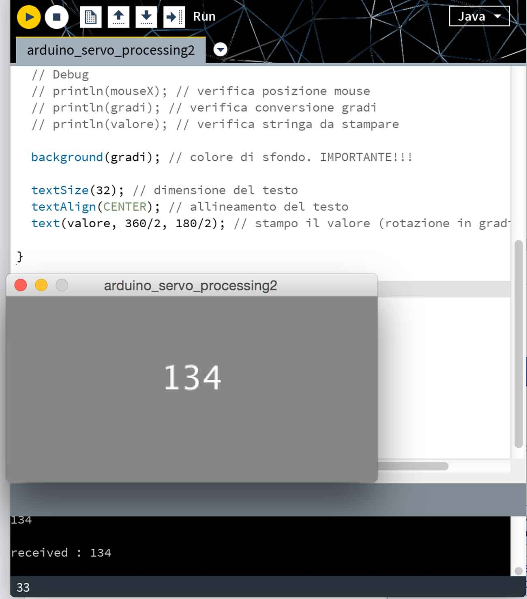
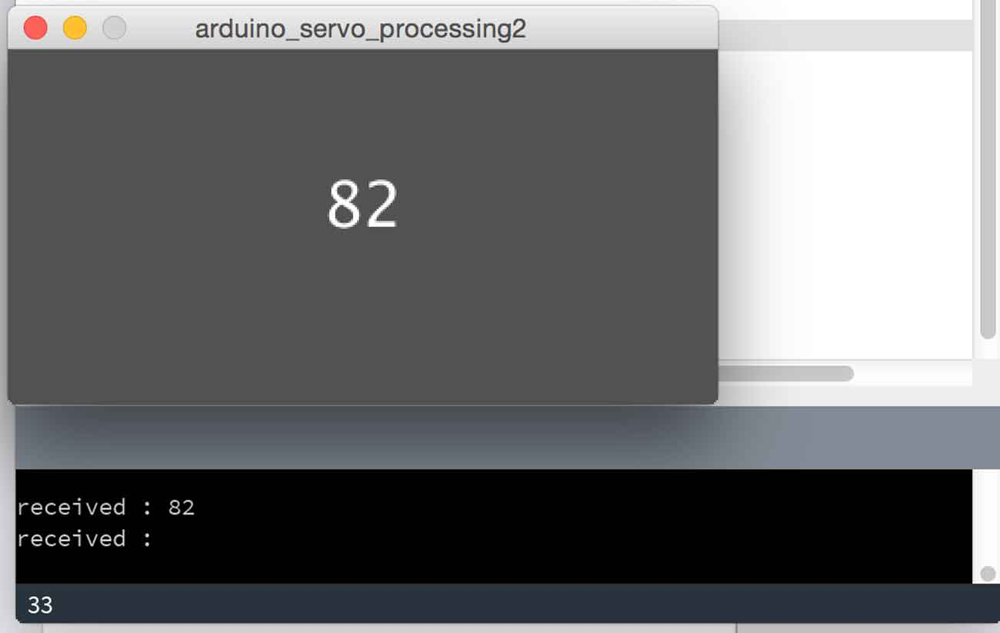

Week 14
Interface-Output Devices
Interface and Application Programming
Assignment: write an application that interfaces with an input &/or output device.
interface_application_programming/index.htmlI chose to use my output: SERVO MOTOR
To develop my interface I decided to use Processing and the Arduino IDE to program the Fabkit board.
Processing is a programming language. Initially created to serve as a software sketchbook and to teach computer programming fundamentals within a visual context, Processing evolved into a development tool for professionals. Today, there are tens of thousands of students, artists, designers, researchers, and hobbyists who use Processing for learning, prototyping, and production.
For this assignment my goal was to command the rotation of the servomotor from a graphical interface. It is the output for my final project.
Firstly I downloaded Processing, from the webpage Processing.org.
Then I started to create a graphical interface to communicate with the FabKit and then move the servomotor. The graphical interface takes the x coordinate of the mouse and uses it as the value of the angle at which the servomotor will be placed.
Using processing, I opened the serial port to create a communication with Arduino. As the window of my interface was 360 pixels, I took the x coordinate of the mouse and I divide it by two. So I got a value between 0 and 180. This is important because the servomotor I'm using covers only 180°, so another value would result in an error.
In Processing I also printed the value sent and I used it to change the color of the background to have another visual feedback.
After detecting the mouse position (x) I added also the "\n" at the end of the string and I sent it to Arduino with the myPort.write command. The "\n" is the new line character. In this way each message sent from Processing will be a new line. Easier for parsing. I had already loaded an Arduino sketch receiving the command on the serial port, and using it as a angle to move the servomotor.
As the message received from Arduino trough the serial port is a string , while the angle that I need to move the servomotor is an integer number, I used the function point( ) (Tutorial.StringToIntExample) to convert the value from string to an integer number. Then, when a "\n" is received the program gets ready to receive another angle.
Moreover Arduino send back and "echo" of the angle received. I used it inside Processing as a feedback to be sure that the command was received correctly.
PROGRAM:
- Processing
- Arduino



Download:
arduino_servo_miky.inoarduino_servo_processing.pde